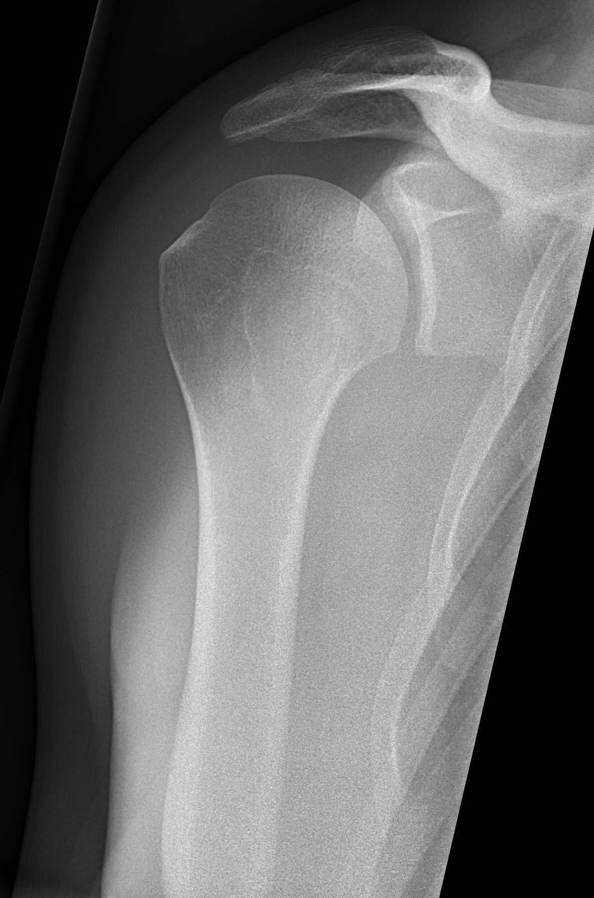

Ficha del catálogo
Radiografía de hombro normal (proyección de Grashey)
- Sistema
- Óseo
- Modalidad
- RX
- Región
- Hombro
- Dificultad
- Intermedio
Proyección anteroposterior verdadera de la articulación glenohumeral. A diferencia de la AP simple, el paciente se rota unos 35-45° para que el haz pase paralelo a la superficie de la glenoides, lo que abre el espacio articular y permite valorarlo realmente.
Técnica
Paciente de pie o sentado, rotado 35-45° hacia el lado que se estudia, de modo que la escápula quede paralela al receptor de imagen.
Qué observar
- Espacio articular glenohumeral abierto y de amplitud uniforme: Es el objetivo de esta proyección
- Congruencia entre la cabeza humeral y la cavidad glenoidea
- Espacio subacromial, normalmente de 7 a 14 mm (si está disminuido sugiere lesión del manguito rotador)
- Contorno de la cabeza humeral, buscando muescas o irregularidades por luxaciones previas
- Acromion, coracoides y articulación acromioclavicular
- Calcificaciones en partes blandas por tendinitis calcificante
Hallazgos
Articulación glenohumeral congruente con espacio articular conservado y estructuras óseas de morfología y densidad normales.
Perlas
En la AP simple la glenoides se superpone a la cabeza humeral y puede simular una luxación posterior o esconderla. La proyección de Grashey junto con una axilar o una 'Y' escapular resuelve casi siempre la duda.
Diagnóstico diferencial
- Luxación glenohumeral anterior
- La cabeza humeral se sitúa medial e inferior respecto a la glenoides y se pierde la congruencia articular; en la proyección lateral escapular queda por delante del centro de la Y.
- Luxación posterior
- En la anteroposterior la cabeza adopta forma de bombilla por rotación interna fija y el espacio articular parece ampliado (la proyección axilar o la lateral escapular confirman el desplazamiento posterior).
- Artrosis glenohumeral
- Hay pinzamiento del espacio articular, esclerosis subcondral, osteofito inferior de la cabeza humeral y quistes subcondrales, con contorno articular deformado.
- Rotura crónica del manguito rotador
- El espacio subacromial se reduce por debajo de aproximadamente siete milímetros y la cabeza humeral asciende, a veces con esclerosis y remodelado del acromion.
- Tendinitis calcificante
- Aparece una calcificación amorfa proyectada sobre el trayecto tendinoso, con hueso y espacio articular por lo demás normales.
- Lesión de Hill-Sachs por luxación previa
- Se identifica una muesca en la cara posterolateral de la cabeza humeral, mejor visible en rotación interna, sin alteración del espacio articular.
Simuladores
- En la anteroposterior no verdadera la glenoides se superpone a la cabeza humeral y simula una luxación o esconde una real (la proyección de Grashey elimina esa superposición).
- La fisis humeral proximal en el adolescente es oblicua y puede simular un trazo de fractura; se reconoce por su regularidad, sus bordes esclerosos y la simetría con el lado contrario.
- El os acromiale, un centro de osificación acromial no fusionado, aparece como una línea transversal en el acromion que se confunde con fractura, pero tiene bordes lisos y corticalizados.
- Las calcificaciones vasculares y los gases intestinales proyectados no deben tomarse por depósitos cálcicos tendinosos.
Por modalidad
- RX
- Valora hueso, alineación, espacio subacromial, morfología acromial y calcificaciones, y es el punto de partida de todo estudio del hombro.
- RM
- Estudio de elección del manguito rotador, del labrum, de la porción larga del bíceps y del edema óseo; la artrorresonancia mejora la detección de lesiones labrales.
- US
- Permite exploración dinámica del manguito y de la bursa, detecta roturas y derrame, y guía infiltraciones (depende mucho del operador).
- TC
- Define fracturas complejas, defectos óseos de la glenoides y de la cabeza humeral en la inestabilidad recidivante y sirve para planificar prótesis.
Protocolo
El paciente se coloca de pie o sentado con la espalda apoyada y luego se rota entre 35 y 45° hacia el lado que se estudia, de modo que la escápula quede paralela al receptor y el haz incida paralelo a la superficie glenoidea. El brazo cuelga en posición neutra y el rayo central se dirige a la articulación glenohumeral. Se completa el estudio con una lateral escapular en Y y, si es posible, con una axilar, que es la proyección que mejor descarta luxación posterior. En rotaciones interna y externa se valoran calcificaciones y muescas de la cabeza humeral.
Clasificación
Sobre esta proyección se apoyan varias clasificaciones de uso corriente. La de Neer organiza las fracturas del húmero proximal según cuántos de los cuatro fragmentos principales están desplazados o angulados de forma significativa. La morfología del acromion se describe en tipos plano, curvo y ganchoso, porque el tipo ganchoso se asocia a mayor conflicto subacromial. En la artrosis glenohumeral se emplean escalas que gradúan el pinzamiento, el osteofito inferior y la erosión glenoidea.
Errores frecuentes
- Informar el hombro con una sola proyección frontal, que es la causa clásica de no detectar una luxación posterior.
- No medir el espacio subacromial, con lo que se pierde un signo indirecto de rotura crónica y extensa del manguito.
- Atribuir a normalidad un dolor de hombro con radiografía limpia, cuando las lesiones tendinosas y labrales simplemente no se ven en radiografía.
- Confundir un os acromiale con una fractura del acromion en el contexto de un traumatismo.

hombro grashey glenohumeral normal proyeccion manguito rotador